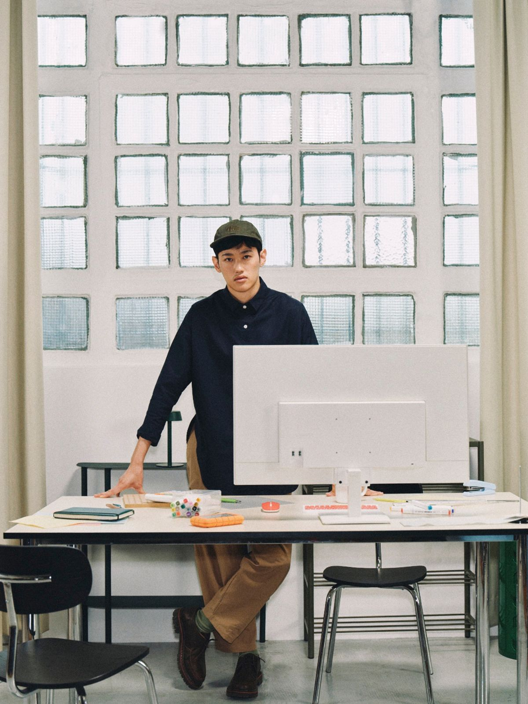
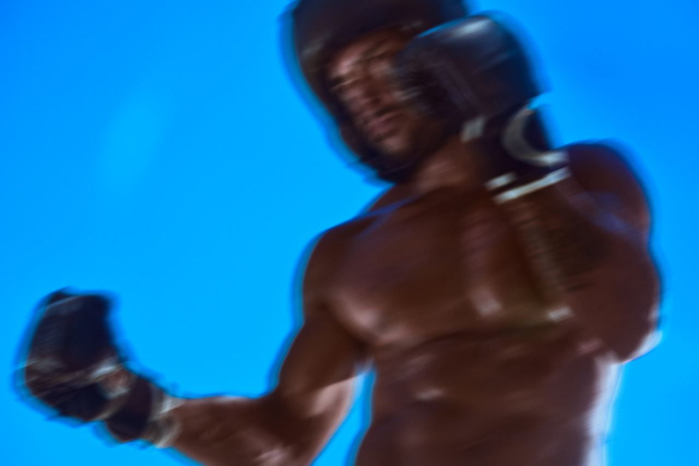
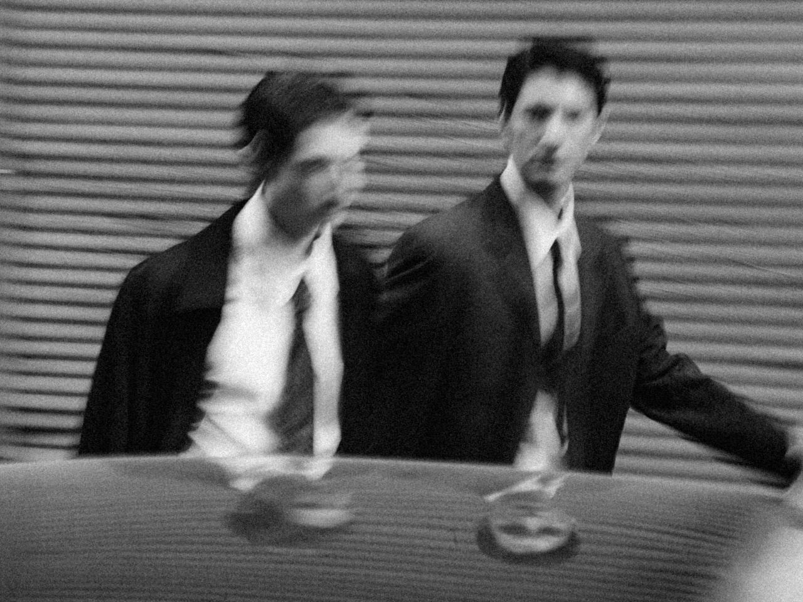
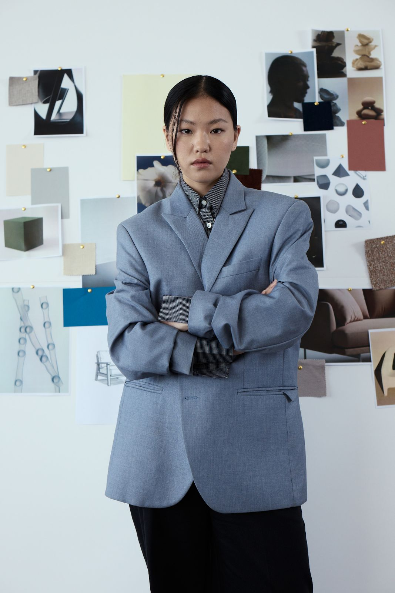
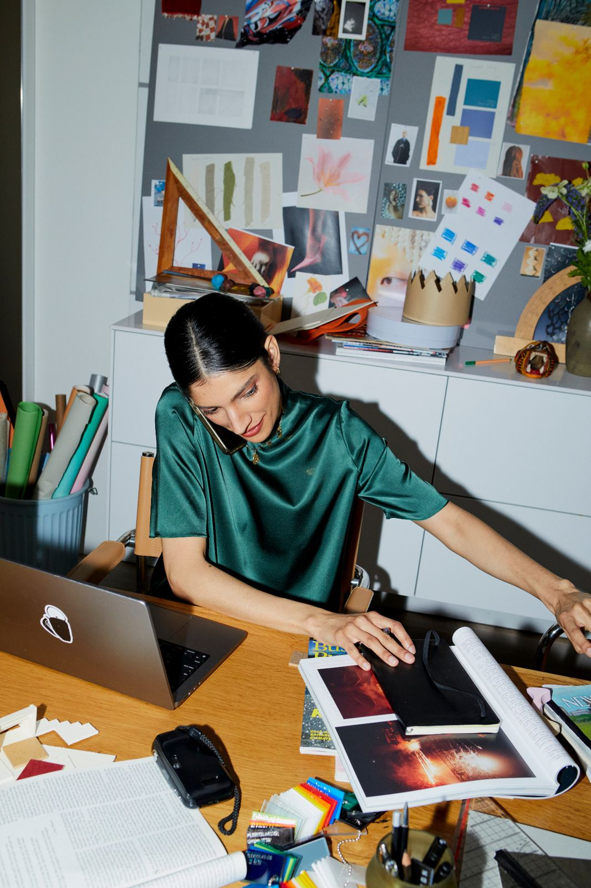
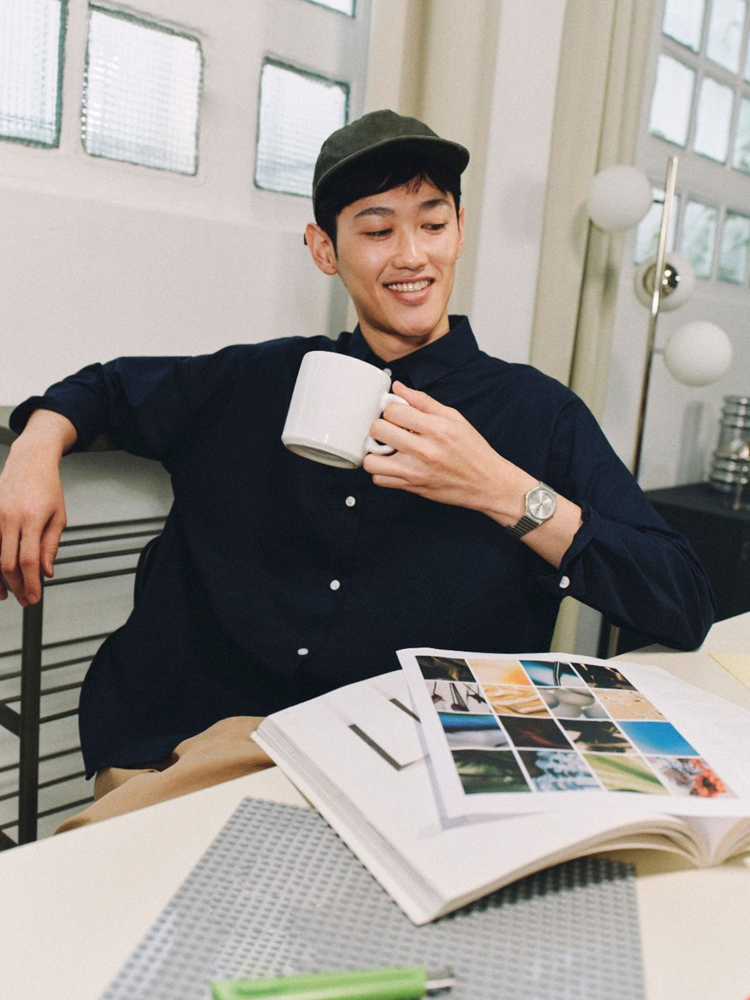
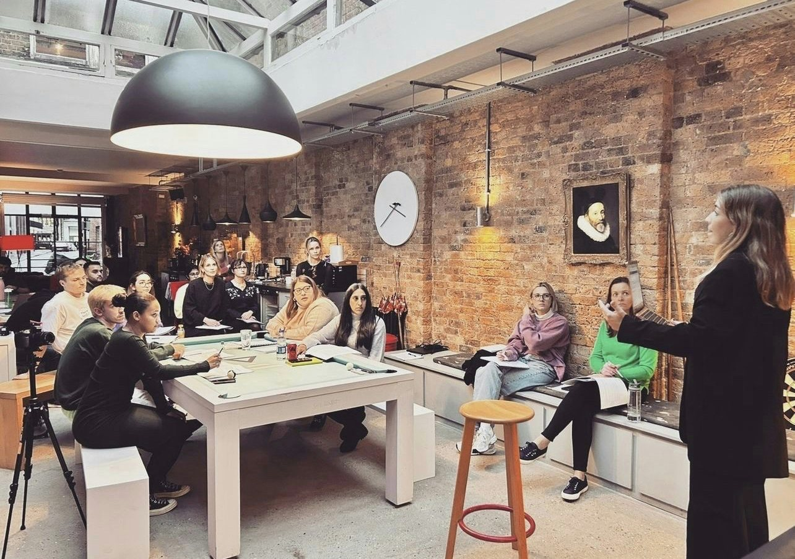

Performunder pressure
Performance, communication and relationships. Coaching for leaders, founders and public figures who have to deliver when it matters, on camera and off it.
Actor. Performance coach. Creator of the ICOP Method. Screen and radio credits across the BBC, HBO, Netflix, Channel 4, ITV and Sky.




I work from the inside, out.
The craft of performing, and the psychology of why you cannot always reach it.
Twenty years as a professional actress across television, film, radio and video games taught me the outside half. Voice, body, camera, timing, preparation and the rehearsal that makes something land on the one day it has to. It is a trade, it has tools, and the tools can be trained so you connect with an audience, perform as yourself, manage stress and anxiety, and build and hold relationships.
Then there is the other half, which is why a person who knows exactly what to do still cannot do it when the pressure arrives. That is where the clinical and psychological work comes in, and it is the reason I trained in it rather than staying on the performance side alone.
Camera and media
Screen, broadcast and studio work. Where you actually are, what the lens is seeing, and how to be watched without performing at it.
Voice and body
Range, pace, breath, stillness and the physical habits that decide how you are read before you have finished your first sentence.
Performance tools
The preparation, structure and rehearsal a professional uses so the thing works on the day rather than in the practice run.
Confidence you can call on
Built by practising under conditions close to the real ones, which is the only method I have ever seen produce it reliably.
Performance psychology
How high performers prepare, regulate and recover when the stakes are high, applied to leadership and business communication.
Nervous system regulation
The physiology of pressure. Breath, body and attention, and the practical techniques that change your state before you speak.
Anxiety, fear and self doubt
Imposter feelings, the fear of being seen, and the patterns that usually predate the career by a couple of decades.
Clinical and behavioural technique
Clinical hypnotherapy and NLP, used precisely and only where the pattern underneath the behaviour is what needs to change.
Almost nobody needs only one half, and the balance is rarely even. Some people arrive needing three sessions on camera technique and nothing else. Some have the technique already and need to work on what happens in the ninety seconds before they use it. Most sit somewhere in between, and we find out where in the first session rather than deciding in advance.
That is the whole reason for working with somebody who does both. A media trainer will fix your delivery and leave the fear intact. A therapist will work on the fear and never once look at what the camera is seeing. You are one person, and the two halves are running at the same time.
I am deliberate about this language. These are evidence informed methods drawn from psychology and performance practice. This is skills based coaching rather than medical treatment, and I will say so plainly if something needs clinical care instead.
You already have the capability.
Talent does not transfer in the room when your nervous system shuts down.
Knowing what to say is not the same as being able to say it. That gap is not a knowledge problem or a confidence slogan problem. It is a performance problem, and performance is trainable.
It also does not stay at work. The pattern that makes you go quiet in a board meeting is usually the same one running in the conversation you keep putting off at home. People arrive here for the presentation and stay for that.
The moment, and everything around it.
People who have to be seen.
Executives and founders
CEOs, founders and senior leaders who have to communicate with authority when the stakes are high.
Coaching →Public figures and talent
Actors, artists, creators and public figures handling interviews, press, camera and live appearances.
Talent →Speakers and public voices
People whose visibility is now part of the job. Keynotes, panels, podcasts, conferences and video.
Keynotes →
International leaders
Senior people leading in English when presence, pace and confidence matter as much as the words.
How I work →I learned this on the job, not from a manual.
From international television, films and video games. BBC award winning actress.
Most communication training works on what you say. I work on what happens to you when you have to say it, with the camera rolling and no second take.
- Perform when you are nervous, and again on the eleventh take
- Take a direction and change something immediately
- Learn material properly and still sound like a person
- Improvise when the plan stops working
- Handle a camera, a microphone and a room at the same time
- Audition, which is a job interview performed cold
- Recover inside the same scene when something goes wrong
- Build presence that reads as real rather than as effort
- Regulate yourself in the ninety seconds before you go on
Selected credits across television, film, radio, games and commercial work
What I am brought in for.
One to one coaching
Executive and performance coaching for CEOs, founders, senior leaders, public figures and talent.
Media and presentation preparation
Interviews, press, panels, keynotes, investor rooms and the presentation you cannot afford to get wrong.
Camera and content performance
How you land on camera, alone, to a lens, with nobody in the room giving you anything back.
Performance under pressure
What happens to the body, the voice and the thinking when the stakes are real, and what can be trained instead.
Presence, voice, pace and authority
The instrument itself. Breath, body, range, stillness and the authority a room hears before the content.
International and English language performance
Leading, presenting and being understood in English when English arrived second, without erasing how you sound.
Mara between the sessions
Camera on rehearsal scored across six areas, so clients practise on the days I am not in the room.
Private access to Mara
White label and private access for talent management and corporate clients, on request.
Boardrooms, cameras, press lines and kitchen tables.
The same work turns up in very different rooms. What changes is who is watching and what it costs to get it wrong.


You manage the story. I work on the person delivering it.
- Private performance coaching for a named client
- Media and interview preparation, including hostile questioning
- Executive presence for founders and senior leaders
- Keynote and conference preparation
- Camera and content performance
- High pressure rehearsal before the real thing
- Performance recovery after something has gone badly
- Mara for rehearsal between sessions, white label on request
Available as a private specialist for an individual client, or alongside an engagement you are already running.
Private and confidential. I do not name clients, I do not confirm who I work with, and none of this work becomes content. Rehearsal footage belongs to the client and is deleted on request.
Recovery is a skill. So is walking back in.
How you land, in the room and outside it.
Executive communication
Saying the difficult thing clearly, to the people who need to hear it.
Public speaking and presence
Keynotes, panels, all hands, investor rooms and camera work.
Confidence under pressure
Access to your own ability when the temperature rises.
High stakes conversations
Negotiation, conflict, bad news, pushing back on someone senior.
Relationships and connection
How you land with the people who matter. Colleagues, clients, partners, family.
Leadership presence
How other people experience you, and what to change to shift that.
Five ways in.
Every programme is tailored, so these are starting points rather than packages. We decide the shape on the call.

Performance, communication and leadership
Executive presence, influence, difficult conversations and confidence when the pressure is on.
Speaking and presentation
Message, structure, voice, body and rehearsal under deliberate pressure.
Stress, anxiety and mindset
Overthinking, overwhelm and regulation, using hypnotherapy, NLP and breathwork.
Confidence, presence and relationships
Self trust, boundaries, presence and the patterns that show up outside work as well as in it.
Keynotes, workshops and team programmes
Coaching is by application and works in blocks of six to ten sessions. Fees are quoted on application after a free 20 minute discovery call. The coaching page has what each one actually involves.
I spent twenty years learning how to perform under pressure. I now use those principles to help leaders do the same.
ICOP works from the inside out. What happens internally decides how your nervous system responds, which decides how you think and regulate, which decides how you communicate, which decides how other people experience you.
Most communication training starts at the last link in that chain. It teaches you what to say and how to stand. That is why it stops working the moment the pressure is real.
What actually happens to people under pressure.
Short pieces on pressure, presence and the things capable people do when the temperature rises. Hover to play.
You do not have to enjoy being on camera to be good on it.
Most people who need to post are not frightened of the idea. They are frightened of watching themselves back.
Session Studio sits inside Mara. Write or paste the script, record it with a prompter that follows your pace so your eyes stay on the lens, and get a read on how you came across before anyone else sees it.
I now have a new range of tools and techniques to cope with the stresses of corporate, and everyday, life.
The most powerful coaching I've done. Usually I can't stick with it, but this approach has changed so much so quickly, I can't believe it.
I discovered where the lack of confidence was coming from, worked on personal and professional issues, and learned voice skills to support my communication and my accent.
Less time worrying and more time doing. I kicked some unhealthy habits, started prioritising friends and family again, built confidence at work and achieved a promotion.
I have won huge pitches and felt totally confident in high pressured situations where I used to get extremely nervous.
What this work actually is.
Five minutes on what happens to people under pressure, why capability disappears at the wrong moment, and what the training actually involves.
Twenty years performing under real pressure.
I did not learn this from a coaching qualification. I learned it on set, on air and in the booth, where the take has to land and there is nowhere to hide. Screen and radio credits across the BBC, HBO, Netflix, Channel 4, ITV and Sky, and voice work for Google, Adidas and the UEFA Champions League.
Jade Matthew.
Performance psychology, communication and presence. Award winning actress. Clinical hypnotherapist and Master NLP Practitioner. Lecturer at LAMDA. Creator of the ICOP Method.
Twenty years performing professionally under real pressure, and the same twenty working out why capable people lose access to themselves at exactly the wrong moment. The coaching sits where those two things meet.
Practise the moment before you live it.
Coaching changes the pattern. Practice is what makes the change survive contact with a real room. Mara is where that happens on the days I am not there.
Camera on, you run the real thing. A pitch, a board presentation, a difficult conversation. You are scored live across six areas, then you reset, run it again, and watch the difference on the recording.
Unlimited sessions · cancel any time · included throughout every coaching block
Mara has completely changed how I communicate and has become my go to communication coach.
Tell me about the room you have to walk into.
Coaching starts with a conversation. Twenty minutes, no charge, and a straight answer about whether I am the right person.
There isn't a one size fits all coaching programme.
We start with you, the situation you are facing and what you want to change. The four below are the doors people usually come through. Your coaching is built around you.
Everyone arrives through a different door.
You might come to me because of a presentation, because you are stepping into something bigger, because of a conversation you keep putting off, or because something happens to you under pressure that you cannot quite name. It is the same work underneath. What changes is the balance.
These are starting points rather than fixed formulas. We set the balance together on the discovery call, and it moves as the work does.
What the work actually deals with.


Performance, communication and leadership
Become the person you know you can be in the room.
For founders, executives, leaders and ambitious professionals who know they have more to give, but cannot always reach it when the pressure is on. Maybe you are stepping into a bigger role, leading people for the first time, or permanently in meetings where your communication is not reflecting your actual capability.
We look at what is happening underneath the behaviour, then work on the external skills that change how people experience you.
We can work on
I started communication and confidence coaching with Jade and it was an amazing experience. I discovered where the lack of confidence was coming from, worked on personal and professional issues I was having, and learned voice skills to support my communication and my accent.
Speaking and presentation coaching
Do not just prepare the presentation. Prepare yourself.
A keynote. An investor pitch. A conference presentation. A board meeting. A panel. A media appearance. Or a presentation you have been dreading for weeks.
We work on the whole performance rather than the slides. Message and structure, then voice, body, energy and audience connection. We do not practise comfortably either. Pressure goes in deliberately, so it holds up on the day when things are not perfect.
What performers do before they go on
The public speaking coaching has changed my career and my life. I have won huge pitches and felt totally confident in high pressured situations where I used to get extremely nervous. Working with Jade to get rid of my fear, work out where it came from and then learn better speaking skills has been the most valuable coaching experience I have had.
Stress, anxiety and mindset
Learn to manage your internal state instead of being managed by it.
For people whose mind and body feel like they are constantly operating under pressure. Maybe you overthink everything, maybe your mind never switches off, or maybe you know logically that you are fine and your body does not seem to have received the message.
Mindset coaching, NLP, hypnotherapy, breathwork and performance techniques, used together so you can understand the pattern and build practical ways of responding differently. Hypnotherapy, NLP and breathwork can help relieve anxiety. The aim is not to remove every uncomfortable feeling. It is to think more clearly, respond rather than react, and recover faster.
We might work on
Her clear explanations about techniques and exercises made them easy to follow and engage with. I now have a new range of tools and techniques to cope with the stresses of corporate, and everyday, life.
This is coaching and hypnotherapy, not medical treatment. If you are dealing with a diagnosed condition, please speak to your GP or a mental health professional. I am happy to work alongside them.
Confidence, presence and relationships
Change the way you experience yourself, and the way other people experience you.
Confidence is not just about standing on a stage. It shows up in the meeting where you do not speak, the boundary you do not set, the conversation you keep avoiding, and the moment someone challenges you and suddenly you lose your voice.
Not to turn you into someone else, and not to give you a script for how a confident person behaves. To help you feel more comfortable being fully yourself.
Real confidence is not performance. It is the ability to stay connected to yourself while you are being seen.
Self confidence
Building trust in your own judgement, ability and voice.
Presence
Being fully present rather than disappearing into your thoughts.
Boundaries
Communicating what you need clearly without becoming aggressive, defensive or apologetic.
Difficult conversations
Staying grounded when emotions are high.
Emotional regulation
Staying connected to yourself when someone else's behaviour activates you.
Relationships
The recurring patterns in how you connect, communicate and respond to other people.
Four stages. The ICOP Method.
Identify
What is actually happening, in the body and in the behaviour, rather than what you assume is happening.
Clear
The patterns, beliefs and responses getting in the way. This is where the clinical work earns its place.
Own
Tools you can reach for deliberately. Breath, attention, voice and state, used on purpose rather than by luck.
Perform
We rehearse the real room, under pressure, until it holds when it is no longer a rehearsal.
The aim is not insight for its own sake. The aim is change you can feel and act on in the real world, when it counts.
Blocks, not single sessions.
One session produces insight. Insight without repetition disappears by the following week, so I do not take single sessions at the start. Six is enough to shift a specific pattern before a specific event. Ten is right when the work is deeper. We decide which on the call, and single top up sessions are available once you have completed a block.
Fees are quoted on application, in writing, after the discovery call, with nothing added later.
- Free 20 minute discovery call, no obligation
- A written proposal with scope and price before you commit
- Blocks of six to ten sessions, paced to your diary
- Payment plans available on every block
- Session and Mara included throughout
The map
Where your performance actually breaks down. You leave with that whether or not you continue.
The pattern
The thing underneath the behaviour, and the work to shift it.
The tools
Voice, breath, attention and state, practised until you can reach them under load.
The room
The meeting, pitch or conversation itself. Rehearsed first, then lived.
Who this works for, and who it does not.
This is for you if
- You are already capable and it is not showing up in the room
- You have a specific situation, event or relationship in mind
- You are willing to practise between sessions, not just talk
- You want to change the pattern, not manage around it
This is not for you if
- You want presentation tips rather than a change in how you operate
- You are looking for a single session to fix something on Friday
- You are dealing with a diagnosed condition that needs clinical care
- You want someone to agree with you rather than tell you the truth
How much does it cost?
Fees are quoted on application. The figure depends on the length of the block and the scope of the work, so I quote after the discovery call, in writing, with nothing added later. Payment plans are available on every block. If the work is not right for you I will tell you on the call rather than send you a proposal.
Is this therapy?
No. I am a qualified clinical hypnotherapist and I use those techniques where they are the right tool, but this is performance coaching. We work on what you do in rooms that matter. If something comes up that needs clinical care, I will say so and help you find the right person.
Does this work online?
Yes. Most of my clients work with me online, including leaders in Berlin and further afield. Voice, body and presence work all translate to camera, and camera work is its own useful pressure. In person in London is available if you prefer it.
What if it does not work?
You will know early. The first session maps where your performance actually breaks down, and you leave with that map whether or not you continue. If after the discovery call I do not think I am the right person, I will tell you then rather than sell you a block.
Not sure which one fits?
Most people are not. Tell me the situation and I will tell you where to start, or whether I am the right person at all. We can usually begin within a fortnight, sooner if you have something imminent.
Performance under pressure
The signature keynote. Why capable people cannot always reach their own capability when the stakes are high, what is actually happening when that occurs, and what can be trained instead.
The signature keynote, and four others.
Performance under pressure
The flagship. Why capable people lose access to their own ability at exactly the wrong moment, what changes in the body and voice when they do, and what can be trained instead of hoped for.
Resilience under pressure
Why some people recover quickly while others stay activated long after the event has passed. Recovery treated as a skill rather than a personality trait.
Confidence is a skill
Why confidence is not something people either have or do not have, why the usual advice fails in high stakes rooms, and how it is actually built.
What performers know about pressure
What actors and athletes understand about preparing the nervous system before a performance, and what leaders can take from it directly.
How to stay yourself under pressure
Confidence, communication and resilience when everything around you is moving. For organisations going through change, growth or uncertainty.
Every talk is adapted to your audience and your event. If none of these is quite right, tell me the theme and I will build one.
Sized to the event
- Keynote · 30 to 60 minutes, with live demonstration
- Interactive session · 90 minutes, audience on their feet
- Fireside, panel or host · trained voice and broadcast experience
- Keynote plus breakout workshop on the same day
Something they can use this week
- A clear explanation of why they freeze, rush or shrink
- A regulation technique they can use before their next meeting
- A shared vocabulary the organisation can keep using afterwards
- A route to continue, through Session and Mara or through coaching
Small groups, on their feet, working on one thing.
Practical small group work on one focus area, with everybody on their feet rather than taking notes. The lowest risk way to prove the method inside an organisation before committing to a programme, and the natural thing to run on the same day as a keynote.
Half day
One focus area, twelve to twenty people, rehearsal under deliberate pressure and a technique everybody leaves using.
Full day
Two focus areas with individual work through the afternoon, filmed where the group is willing, so people watch the difference rather than take my word for it.
Keynote plus breakout
The talk to the whole room in the morning, then the smaller session with the leadership team or the people presenting next quarter.
Programme
A series across a cohort with practice in between, so the change survives the gap between sessions.

I do not talk about performing under pressure. I do it for a living.
I am a working actor and voice artist with twenty years of credits across the BBC, HBO, Netflix and Channel 4, and a BBC Audio Drama Award. I lecture at LAMDA. I have coached more than five hundred senior leaders, including individuals from Deutsche Bank, Vodafone, Hilton, Netflix, Channel 4 and Sky.
Which means the demonstration is live. I can show an audience the difference between a person speaking and a person landing, in real time, using someone from the room.
- Conferences and industry events
- Leadership offsites and away days
- All hands and company kick offs
- Employee network and development weeks
- Client and partner events
A talk changes the temperature in a room for a day. If you want it to change behaviour, the keynote works best as the opening of a programme.
The same methodology, brought into your organisation.
Bespoke workshops, leadership programmes, executive coaching and keynote speaking. Built around the situations your people actually face rather than generic scenarios.
Eleven areas.
Where the programmes run.
Four ways to run it.
What a programme looks like inside an organisation
How the workshops and programmes are structured, what changes for the people in them, and how progress is made visible across a cohort rather than assumed.
Conference and event speaking
Performance under pressure is the signature keynote, alongside talks on resilience, confidence and what performers know about pressure. 30 to 60 minutes with live demonstration, or a 90 minute interactive session with the audience on their feet. Also available to host, facilitate or chair a panel.
Half day or full day
Practical small group work on one focus area. The lowest risk way to prove the method inside your organisation before committing to a programme.
Leadership or team programme
Structured delivery across a cohort, with practice between sessions rather than a gap between them. Confidential one to one work available alongside for the people who need it.
and Mara across the organisation
Where appropriate, the work continues between sessions through Session and Mara. Camera on practice, scored across six areas, so progress is visible across a cohort rather than assumed.
The full brochure.
The ICOP Method, the rooms with live demonstrations, the curricula, the six scored dimensions, and how Mara compares to everything else on the market. Read it in the browser or download the PDF to circulate internally.
I work with people who get looked at for a living.
Actors, musicians, public figures, politicians and international executives. The ones whose work is judged in public, whose face is the campaign, and who have to be entirely themselves on a day when several hundred thousand people are watching them do it.
Actors and performers
Junkets, festivals, panels, awards, first leads, first time carrying a press campaign, and the self tape that has to be sent tonight.
Musicians and artists
Album press, interviews about work that is genuinely personal, stage talking, documentary sit downs, and being asked to explain something you made instinctively.
Public figures
Broadcast, long lead profiles, live radio, podcasts, hostile questioning, and the first appearance after a period out of view.
Politicians and spokespeople
Debates, doorsteps, select committees, conference speeches, media rounds, and holding a line under sustained pressure without sounding like somebody holding a line.
International executives
Founders and senior leaders whose visibility is now part of the job. Investor pitches, keynotes, earnings, global town halls, and leading in English when English arrived second.
From how you land on camera to why it frightens you.
Most preparation only ever touches the outside. Sit here, look there, remember the three points, try to relax. It helps a little, and then the person walks into the room and something considerably older than their preparation takes the controls. I work at both ends of that, in the same session, because the two are the same problem seen from different sides.
What the room sees
What is happening underneath
Three disciplines, used at the same time.
Performance coaches tend to work on the outside. Communications people tend to work on the words. Therapists tend to work on the inside and stop there. Your client is one person, and they need all three in the room at once.
Performance
Body, breath and tension, voice, pace and range, camera and microphone, rehearsal under load.
Communication
Message and structure, clarity under questioning, connection with a room, what actually lands.
Psychology
Anxiety and fear, imposter feelings, self doubt and patterns, regulation and recovery.
Where they meet
Performance with communication gives you delivery. Performance with psychology gives you nerve. Communication with psychology gives you conviction. The ICOP Method sits where all three overlap.
Delivery without nerve collapses the moment somebody asks the question you were hoping to avoid. Nerve without conviction gets you through the interview and leaves you saying nothing you meant. Your client needs the middle, and the middle is the only place I work.
Twelve moments.
Where your clients are judged.
Four ways to bring me in.
Press and campaign preparation
One to one preparation ahead of a specific release, tour, campaign, launch or announcement. We work on the answers your client will actually be asked to give, then rehearse them properly, on camera, under something close to real conditions, until the delivery holds up when they are tired and it is the eleventh interview of the day. Fixed fee per person, agreed in advance, so there is no meter running.
Roster retainer
Ongoing access across the people you represent, booked against an agreed number of days a month. Useful when you have several clients in campaign at once, when somebody needs to be available at short notice, and when you would rather not negotiate a new fee every time a booking lands. Priority scheduling is part of what you are paying for.
The confidence work underneath
For the client whose problem is not the interview. Long standing anxiety about being seen, imposter feelings that have grown with the career rather than shrunk, doubt that arrives on the good days, or a genuine fear that has started costing them opportunities. Private, confidential, and drawing on clinical hypnotherapy and NLP alongside the performance work. Usually a block rather than a single session.
and Mara
Where it suits the client, practice continues between sessions through Session and Mara, my interactive performance platform. Camera on rehearsal, scored across six areas including pace, pauses, vocal range, clarity and presence, so your client can run the answers again on a Sunday night without needing me in the room. Entirely optional, and never a condition of the work.
Nothing leaves the room.
I sign whatever you need me to sign, before we start, including production side and party side agreements where a studio, broadcaster or office requires it. I do not name clients, I do not confirm or deny who I work with, and I do not use this work as content in any form, which includes the anonymised version.
Where we record rehearsal, and we usually do because playback is most of the value, the footage belongs to the client. It is deleted on request, it is never retained as an example, and where Session and Mara are used the account sits with the client rather than with the agency, so nothing about unreleased work or unannounced positions passes through anybody else's hands.
I have spent twenty years on the other side of this. I know what it costs somebody when a preparation session turns into an anecdote at a dinner party, and I have no interest in being the person who does that.
I have done the press.
I am a working actress with screen and radio credits across the BBC, HBO, Netflix, Channel 4, ITV and Sky, and I have sat in the chair, on the panel and in front of the microphone on days when I was exhausted and the answer still had to land. That is the part your client recognises within about ninety seconds, and it is the reason they tend to stop performing at me and start actually working.
Alongside that I am a Lecturer at LAMDA, a clinical hypnotherapist and a Master NLP Practitioner, which is where the inside half of this comes from. Anxiety, imposter feelings and the fear of being seen are all trainable, and the reason capable people lose access to themselves at exactly the wrong moment is well understood once somebody explains it to them properly.
More than five hundred people have been through the ICOP Method, and leaders from the BBC, Netflix, Channel 4, Sky, Deutsche Bank, Vodafone and Hilton have trained with me one to one. The work has been tested on people whose pressure is commercial as well as people whose pressure is public, and the mechanism underneath it turns out to be the same one.
Send me your next difficult one.
The quickest way to work out whether this is useful to you is to put one client through it, ideally somebody with something real in the diary in the next few weeks. Twenty minutes on the phone first, so I understand the roster, what is coming up and how you like to work.
The ICOP Method
A framework for performance under pressure, developed across twenty years of professional performance, clinical practice and coaching more than five hundred people.
Inner to outer, in that order.
Most training starts at the outside, with words and posture. ICOP starts where the behaviour is actually produced and works outward, so the change survives contact with a real room.
Presence broken into parts you can train.
Presence is treated as something people either have or do not have. It is not. It is five systems working together, and each one can be assessed, trained and rebuilt.
Breath
The regulator. What decides whether the rest of the system is available to you.
Body
The instrument. Posture, grounding and the physical signals other people read first.
Voice
The carrier. Pace, range, resonance and the authority the room hears before the content.
Mind
The narrator. Attention, meaning and what you are telling yourself while you speak.
Impact
The result. How other people actually experience you, measured rather than assumed.
Six tools, applied to the specific problem.
Nothing here is a package. The tool is chosen for what is actually producing the pattern.
Breathwork
The fastest route into the state you need. Trained until you can reach it in the ninety seconds before you speak, not just in a quiet room.
Visualisation
Rehearsing the room in detail before you walk into it. Standard practice for performers and athletes, rare in business, and it changes what your body expects.
Clinical hypnotherapy
For the pattern that keeps running underneath the effort. Precise work on what is producing the behaviour rather than managing it.
NLP
Language, meaning and the internal narrative. How you talk to yourself while you are speaking to everyone else.
Voice and body work
Twenty years of professional performance training. Pace, range, resonance, grounding and stillness, trained as an instrument.
Rehearsal under pressure
Deliberate practice in conditions that resemble the real room, in person with me or on camera with Mara.
In the room, and between the rooms.
I deliver ICOP directly through coaching, workshops and keynotes. Session carries the same method into the days between, so people practise the moment before they have to live it.
That combination is the point. Human work changes the pattern. Practice makes the change survive contact with a real room.
And the method does not stop at the office door. The last link in the chain is how other people experience you, which is another way of saying your relationships. Leaders who fix this at work usually notice it first at home.
The platform behind the method.
I built Session so the method could reach people on the days I am not in the room. Mara is the interactive performance coach inside it.
Watch Mara work, then try it yourself.
Ninety seconds on what Mara does, scored across pace, pauses, vocal range, energy, clarity, presence and impact. Then camera on, and run your own.
Unlimited sessions · cancel any time · included throughout every coaching block
However you need to use it.
For individuals
Practise on your own, on camera, as often as you like. £29 a month, cancel any time.
Sign upFor coaches and agencies
Extend the support you already give a client, with rehearsal between your sessions. Private and white label access on request.
Ask about accessFor companies
A rehearsal environment for a team or a cohort, so progress is visible rather than assumed.
CorporateYou do not have to enjoy being on camera to be good on it.
Most people who need to post are not frightened of the idea. They are frightened of watching themselves back.
Session Studio sits inside Mara. Write or paste the script, record it with a prompter that follows your pace so your eyes stay on the lens, and get a read on how you came across before anyone else sees it.
Record. Reveal. Rehearse again.
Record
Camera on, mic on. A pitch, a board presentation, a difficult conversation. Mara sets up a realistic simulation and listens without interrupting.
Reveal
What your delivery actually did, measured rather than guessed. Mara shows you the moment your state shifted, and why the room felt it.
Rehearse again
A physical reset, one specific technique, then a second run. Watch both recordings back to back. That visible difference is what you take into the real room.
Every run is scored across six areas.
Mara has completely changed how I communicate and has become my go to communication coach.
Unlimited sessions · cancel any time
The company that carries the method.
For individuals
Mara on your own device, whenever you need it. Every mode, every scenario, and the free tools alongside it. The route people take when they want to practise daily or are not ready for private coaching.
- Practice · structured runs with a scored debrief
- Coaching · the full method, voice, body and ICOP
- ESL Leaders · for leading in a second language
For organisations
Corporate training and team programmes, with Mara licensed alongside so people practise between the sessions I deliver. Priced separately from the individual product.
- Live delivery from me, keynote, workshop or programme
- Mara licences for the teams that need daily practice
- Progress visible across a cohort rather than assumed
Work with me, or practise with Mara.
Work with Jade
Private coaching, speaking and corporate delivery. The human work, with me in the room. Inner work to clear the pattern, outer work to build presence that holds. Mara included.
Practise with Mara
Start immediately, on your own, from £29 a month. Unlimited sessions, cancel any time, and the same methodology used with leaders from Netflix, Deutsche Bank and Channel 4.
I have spent my working life performing under pressure.
Performance, speaking and presence coach. Actor, voice artist and audio director. Clinical hypnotherapist, Master NLP Practitioner and breathwork practitioner. Lecturer at LAMDA. Founder of Session. I work with leaders and entrepreneurs on how they perform, speak and connect, at work and in life.
I trained as an actor and worked professionally in television, film, radio and voice for twenty years, across the BBC, HBO, Netflix and Channel 4. Performance under pressure was not a topic I studied. It was the job.
Alongside that I qualified as a clinical hypnotherapist and Master NLP Practitioner, because the interesting question was never how to stand or where to look. It was why capable people lose access to themselves at exactly the wrong moment.
Those two threads became the ICOP Method. Over the last twenty years I have used it with more than five hundred people, from actors and students at LAMDA to founders, executives and leaders who have to walk into rooms that decide things.
Session is the most recent part of it. I built the platform myself so the method could reach people between sessions, and so the practice could keep happening on the days I am not there.
Performance
Screen and radio credits across the BBC, HBO, Netflix, Channel 4, ITV and Sky, including EastEnders. BBC Audio Drama Award winner.
Voice
Voice artist and audio director. Clients including Google, Adidas, Braun, HelloFresh and the UEFA Champions League.
Teaching
Lecturer at LAMDA. Course design, assessment and coaching across multiple cohorts.
Clinical
Clinical hypnotherapist and Master NLP Practitioner.
Coaching
More than five hundred clients across performance, communication and resilience.
Building
Founder of Session and creator of Mara. Also runs Slowdance Productions, a corporate podcast and audio production company.
Twenty years of rooms like these.
What actually happens to people under pressure.
Practical pieces on performance, communication, presence and the gap between knowing what to do and being able to do it.
Train it.
Reading about performance under pressure changes very little on its own. That is rather the point of everything written here. If you recognise yourself in these pieces, the coaching is where it gets worked on.
Book a 20 minute discovery call.
Tell me what you have to walk into. No charge, no pitch, and a straight answer about whether I am the right person for it.
What happens on the call
- You describe the situation, the room or the deadline
- I tell you what I think is actually going on
- If I can help, I explain how and what it would involve
- If I cannot, I say so and point you somewhere better